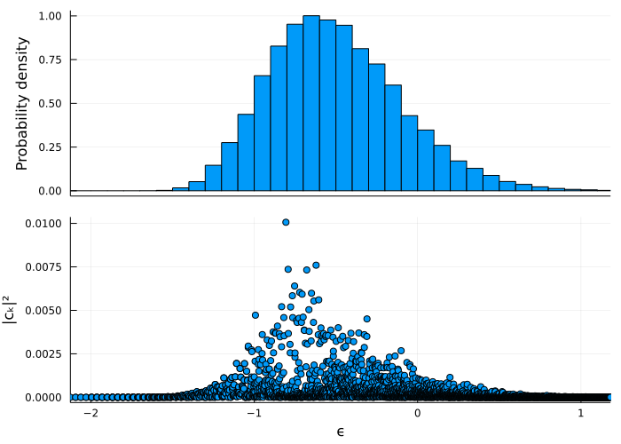
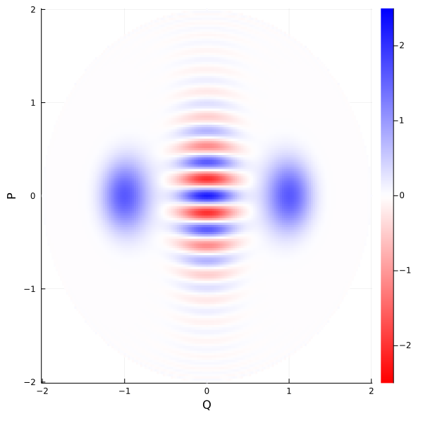
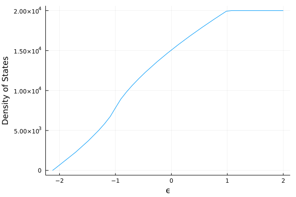

Examples for DickeBCE
The module DickeModel.DickeBCE works with the quantum Dicke model using a very efficient basis known as the coherent efficient basis (BCE for its acronym in Spanish). See Refs. [4] and [5] for a detailed explanation on how and why it works. Throughout this examples, we will work with a system size of j = 30, but using this module you can easily go up to j = 100 (as done in Refs. [13], [14], [15], [20]) and beyond.
Diagonalizing the Dicke Hamiltonian
Let us start by defining our parameters:
using DickeModel.DickeBCE, DickeModel.ClassicalDicke
system = QuantumDickeSystem(ω=1.0, γ=1.0, ω₀=1.0, j=30, Nmax=120)To load the eigenbasis, simply use diagonalization:
@time eigenenergies,eigenstates = diagonalization(system)[ Info: Diagonalizing... [ Info: 3454 converged states were obtained up to ϵ=1.1807678467701475. [ Info: Fixing numerical degeneracies (correcting parity). 449.703669 seconds (233.99 M allocations: 7.604 GiB, 0.47% gc time, 0.62% compilation time)
Diagonalizing the Hamiltonian is an expensive operation. For j = 100 and Nmax = 300 it can take up to a day, but the function diagonalization saves the result to disk, so the second time you call it with the same parameters it just loads it:
system = QuantumDickeSystem(ω=1.0, γ=1.0, ω₀=1.0, j = 30)
@time eigenenergies,eigenstates = diagonalization(system)[ Info: Loading diagonalization: Nmax=120 3.127123 seconds (389.67 k allocations: 695.713 MiB, 1.33% gc time, 0.38% compilation time)
Note that we did not have to pass Nmax this time, it loaded it from disk (see more details on the documentation of QuantumDickeSystem).
You can change the default folder, or disable caching altogether by passing extra arguments to diagonalization.
The resulting eigenstates form a matrix. To get the $k$th eigenstate, simply call state_k = eigenstates[:,k] (or, even better, state_k = @view eigenstates[:,k], which avoids unnecessary memory allocations.)
Local density of states of a coherent state
In this example, we obtain the eigenenergy components of a coherent state. The function coherent_state will give us a coherent state in the BCE, then we project it into the eigenbasis by left-multiplying by eigenstates', which is short for adjoint(eigenstates). Finally, we broadcast the vectorized version of the function abs2 to extract all the coefficients.
using Plots
using DickeModel.DickeBCE, DickeModel.ClassicalDicke
j = 30
system = QuantumDickeSystem(ω=1.0, γ=1.0, ω₀=1.0, j = j, Nmax=120)
eigenenergies,eigenstates = diagonalization(system)
ϵₓ = -0.5
x = Point(system, Q=-1, P=0, p=0, ϵ=ϵₓ)
coh_state = coherent_state(system, x)
coherent_state_eigenbasis = eigenstates'*coh_state
abscₖ²=abs2.(coherent_state_eigenbasis)
ϵₖs = eigenenergies/j
plot(histogram(ϵₖs, weights=abscₖ²,
ylabel="Probability density", xticks=:none,normed=true,nbins=50),
scatter(ϵₖs, abscₖ², ylabel="|cₖ|²", xlabel="ϵ"),
size=(700,500), key=false, layout=(@layout [°;°]),
xlim=(ϵₖs[1],ϵₖs[end]))
See this example for a semiclassical computation of the envelope of this function.
Efficient Husimi functions
The functions DickeBCE.husimi, DickeBCE.coherent_overlap, and DickeBCE.coherent_state all accept a chop argument, which allows to significally speed up computation time at the cost of slight numerical precision [11]. In this example we show how significant this speedup can be. Let us construct a big system:
using DickeModel
using DickeModel.DickeBCE
using DickeModel.ClassicalDicke
using LinearAlgebra
j = 600
Nmax = 1200
system = QuantumDickeSystem(ω₀=1, ω=1, γ=1, j=j, Nmax=Nmax);Do not try to diagonalize such a big system! Your computer 💻 might explode 💥!
For the sake of example, let us construct some random states in a simple manner (although if you are interested in building random states in the eigenbasis, check the function DickeBCE.random_state and see this example).
n = 3 #how many random vectors
D = dimension(system)
random_vectors = rand(ComplexF64,(D,n))
for i in 1:n
random_vectors[:,i] /= norm(@view random_vectors[:,i]) #normalize each one
endrandom_vectors is a matrix with n columns (states). Let us fix a point in the phase space:
x = Point(Q=0.6, P=-0.1, p=-0.2, q=-0.8)We may call husimi(system, x, random_vectors), which will return an array with n elements. The ith element is the result of evaluating the Husimi function of the ith state (column) at the point x.
julia> @time husimi(system, x, random_vectors, chop = 0)
14.924603 seconds (34.10 M allocations: 927.345 MiB, 1.25% gc time, 2.04% compilation time)
3-element Vector{Float64}:
4.4778213220261675e-7
2.710877473969897e-7
5.182098548516507e-8By passing chop = 0 we are allowing for no optimization. The code has to build all the coefficients of the coherent state and then multiply them by each coefficient in random_vectors. However, if we set chop to be slightly bigger, things will speed up significantly:
julia> @time husimi(system, x, random_vectors, chop = 1e-14)
0.072228 seconds (456.54 k allocations: 13.270 MiB, 26.85% compilation time)
3-element Vector{Float64}:
4.477827437078215e-7
2.710867756570489e-7
5.182094999665027e-8Note that the results barely changed, but this time it used a lot less memory and time. The chop argument tells the code it can chop a portion of that size off the tails of the distribution of the coherent state (see Ref. [11] for details). You loose almost no information, and you gain a lot of time. The default is chop = 1e-6, although you may increase it if you need more precision:
julia> @time husimi(system, x, random_vectors) #default chop = 1e-6
0.023821 seconds (194.72 k allocations: 5.249 MiB)
3-element Vector{Float64}:
4.48910441499923e-7
2.697814261017752e-7
5.218962340473051e-8That's fast!
Projected Wigner function of a cat state
Using DickeBCE.WignerProjqp, we may compute the Wigner function of a state, projected onto the atomic plane. We do this for a cat state composed of two coherent states centered at x and y, which, taking advantage of Julia's Unicode capabilities, we name 🐱 (write \:cat: + Tab).
using DickeModel.ClassicalDicke, DickeModel.DickeBCE
system = QuantumDickeSystem(ω=1.0, γ=1.0, ω₀=1.0, j=10, Nmax=50)
res=0.025
Qs=Ps=-2:res:2
pts=[[Q,P] for Q in Qs, P in Ps if Q^2+P^2 <= 4]
x = Point(Q=-1.0, P=0, p=0, q=0)
y = Point(Q= 1.0, P=0, p=0, q=0)
🐱 = 1/sqrt(2) * (coherent_state(system, x) + coherent_state(system, y))
W=DickeBCE.WignerProjqp(system,
[🐱],
pts
)[1]
d=Dict(zip(pts,W))
function mW(Q,P)
if [Q,P] in pts
return d[[Q,P]]
else
return NaN
end
end
heatmap(Qs, Ps, mW, size=(600,600),
xlabel = "Q", ylabel = "P",
c=cgrad(:bwr, rev = true), clim=(-2.5,2.5))
The functions for computing Wigner functions are not thoroughly tested nor thoroughly optimized. They are based on these notes [10], but they have room for improvement.
Plotting the semiclassical density of states
Using DickeBCE.density_of_states, we plot the semiclassical density of states originally calculated in Ref. [3]. Note that this function does not require diagonalization, so we can have j as large as we want.
using DickeModel.ClassicalDicke
using DickeModel.DickeBCE
using Plots
system = QuantumDickeSystem(ω=1, γ=1, ω₀=1, j=100)
ν(ϵ) = density_of_states(system, ϵ)
ϵgs = minimum_energy(system)
plot(ν, ϵgs:0.01:2, xlabel="ϵ", ylabel="Density of States")
This is precisely the red line in Fig. A1. of Ref. [19].